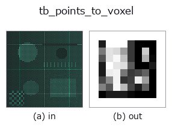

typed op• Datenarten: points → volume
• Aufruf: fullseye.apply(img, "tb_points_to_voxel", a=0.5, b=0.5) (das 2-D-Modell ist ein Bild plus zwei skalare Regler a,b∈[0,1])

*Die Abbildung ist die tatsächliche Ausgabe auf einer synthetischen 128×128-Eingabe. Links Eingabe, rechts Ausgabe. Punktwolken als Draufsicht-Streudiagramm (Helligkeit = z), 1-D-Reihen als Linie, Volumen als Maximum-Projektion entlang z, Videos als mittleres Bild, komplexe Bilder als Betrag; Rückgabewerte, die kein Bild ergeben, werden als Werte gezeigt.*
*Regler a ändert die Ausgabe nicht (gemessen: identisch bei 0,1 / 0,5 / 0,9).*
*Regler b ändert die Ausgabe nicht (gemessen: identisch bei 0,1 / 0,5 / 0,9).*
Stufen (die vorangehenden Ops → dieser Op, von links nach rechts):
▸ tb_points_to_voxel: stages (docs site)
Auf anderen Bildern (synthetische Szene / Foto / Münzen. Obere Reihe: Eingaben, untere Reihe: deren Ausgaben. Regler auf Standard):
▸ tb_points_to_voxel: other inputs (docs site)
Bewegung (GIF: Bilder / Ansichten / Schnitte nacheinander. Die stehende Abbildung ist die vollständige; das GIF ist ergänzend):
Punktwolke (N,3) → Dichte-Voxel (size³). Splatting per scatter_add, optional mit Gauß-Glättung.
> Die ausführliche Beschreibung unten ist der Originaltext — Zusammenfassung und Überschriften sind übersetzt.
bounds=(lo,hi) を与えれば複数雲を同一格子に載せられる(=マッチング前提)。
手順: 各点を `idx = floor((p − lo)/(hi − lo)·(size − 1))` で整数格子に落とし、その voxel に
1 を加算する(値 = その voxel に落ちた点の個数)。`smooth > 0 なら σ=smooth`(voxel 単位)
の gaussian を 3 軸分離 conv で掛ける(半径 `max(1, int(4σ + 0.5))`、端は replicate)。
出力の軸順は 点の列の順そのまま(`points[:, 0]` → 軸 0)で、(depth,row,col) への
並べ替えはしない。
• `bounds: (lo, hi)` の 3 次元ベクトル 2 本。None なら点群自身の min/max(雲ごとに
格子が変わるので、2 つの雲を比べるときは必ず同じ bounds を渡す)。長さ 3 でない・非有限・
`hi <= lo の軸があると ValueError(tsdf 系の ((xmin,xmax),...)` 流儀は長さ 2 として拒否)。
• 範囲外の点は捨てずに 端の voxel へ clip される(端に偽の密度が溜まる)。切り落としたい
なら事前に点群側で除く。
• `size: 一辺の voxel 数。hi − lo` が 0 の軸は 1e-9 に置換されるだけで警告しない。
• 空の点群で bounds=None は numpy の min が例外を出す。
• 返り値: `(size, size, size)` float64 numpy(device で計算しても CPU に戻す)。値は個数
(平滑後は個数の重み分布)で正規化はしない。
後段: `match_points_ncc / signed_distance_field / voxel_to_mesh` の入力に。
2-D 進化レジストリへ橋渡しした 3d の op `points_to_voxel。実装は同じで、呼び出し規約だけ op(v, a, b) に合わせてある。この op に調整点は無く、a も b` も使われない。
• Katalog der Beispieldaten (Download-URLs / Lizenzen) — 2-D nutzt skimage.data (BSD/Public Domain) plus synthetische Bilder, 3-D nennt Download-URLs echter Datenquellen (Stanford, PDS, …).
• Herkunft und Literatur der Operatoren — die Quellen der Forschung/Verfahren, auf denen diese Operatorfamilie beruht.
Das Programm unten ist nachweislich lauffähig (gleiche Eingabe wie die Abbildung). In der Studio-Hilfe wird dieser Block zu Schaltflächen, die es sofort laden und ausführen.
img_to_points 0.50 0.50 tb_points_to_voxel 0.50 0.50
▸ Load this pipeline · Load & run
Die folgenden Beispiele rufen den zugrunde liegenden Ledger-Op points_to_voxel auf. Dieser Brücken-Op ist dieselbe Implementierung, angepasst an die Konvention fn(v, a, b); das Verhalten gilt unverändert (nur die Aufrufform unterscheidet sich).
• sh_descriptor_retrieval — py -3.11 examples_3d/sh_descriptor_retrieval.py
• shape_desc_pose — py -3.11 examples_3d/shape_desc_pose.py
volume als Eingabe)identity · vol_gaussian · vol_median · vol_erode · vol_dilate · vol_threshold · vol_reg_dilate · vol_reg_erode
typed)tb_estimate_point_normals · tb_iss_keypoints · tb_project_points · tb_render_point_depth · tb_statistical_outlier_removal · tb_radius_outlier_removal · tb_voxel_grid_downsample · tb_mls_smooth
*Provenance: ops.py — 2D Operator-Registry. Diese Notiz wird von tools/opdocs.py md erzeugt (nicht von Hand bearbeiten).*
© 2026 Kazufumi Furuse — Fullseye operator documentation. Licensed under Apache-2.0.
{kind=link}
{kind=link}